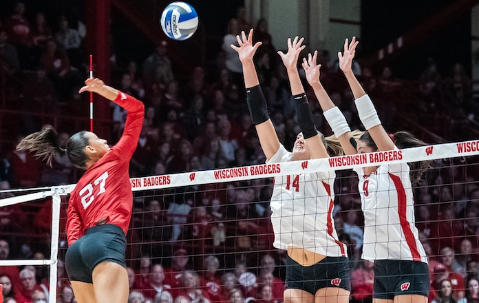
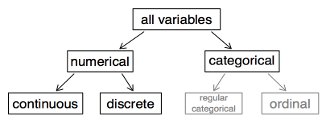
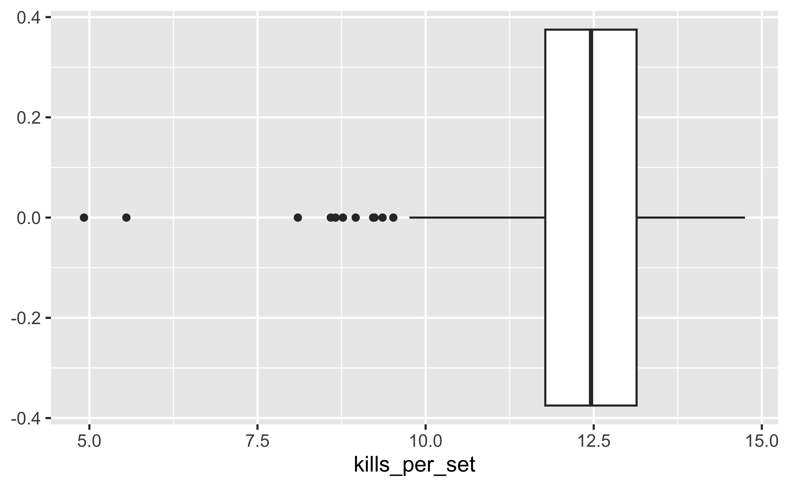
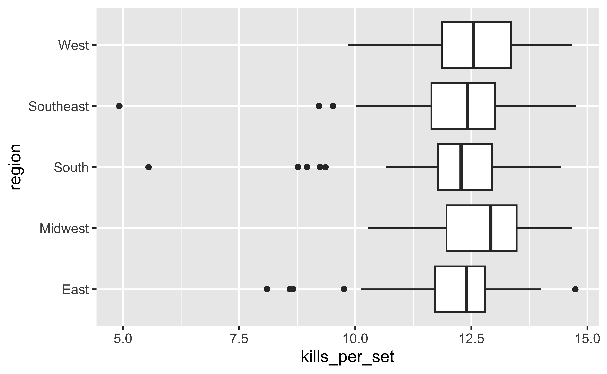
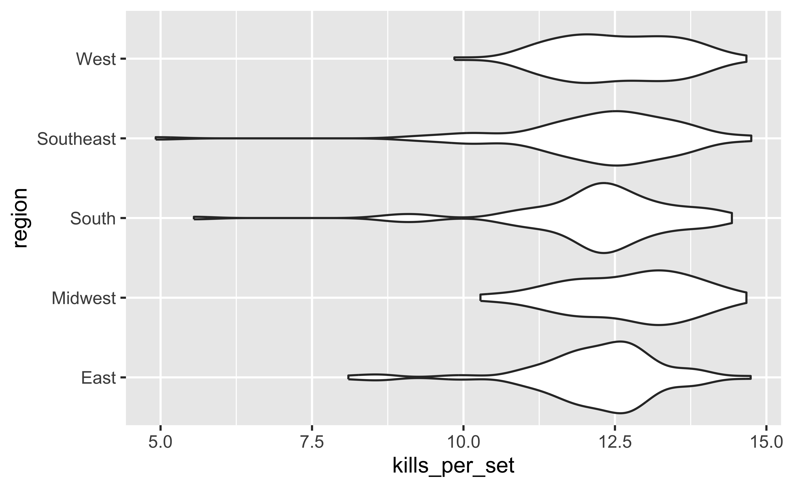

Variable types and visualization types
STAT 7500
Dr. Katie Fitzgerald
ggplot ❤️ 🏐
Data: Volleyball
NCAA women’s volleyball season-level statistics for 2022-2023 season.
Rows: 334
Columns: 15
$ team <chr> "Lafayette", "Delaware St.", "Yale…
$ conference <chr> "Patriot", "MEAC", "Ivy League", "…
$ region <chr> "East", "Southeast", "East", "Sout…
$ aces_per_set <dbl> 2.33, 2.20, 2.15, 2.15, 2.03, 1.98…
$ assists_per_set <dbl> 11.01, 11.45, 12.60, 10.56, 11.61,…
$ team_attacks_per_set <dbl> 34.54, 29.98, 35.39, 32.52, 34.10,…
$ blocks_per_set <dbl> 1.31, 2.17, 1.82, 1.81, 1.83, 2.39…
$ digs_per_set <dbl> 13.60, 12.58, 15.29, 14.22, 14.27,…
$ hitting_pctg <dbl> 0.180, 0.250, 0.242, 0.194, 0.201,…
$ kills_per_set <dbl> 11.93, 12.12, 13.90, 11.54, 12.40,…
$ opp_hitting_pctg <dbl> 0.227, 0.137, 0.155, 0.170, 0.188,…
$ w <dbl> 8, 24, 23, 23, 18, 17, 19, 16, 18,…
$ l <dbl> 15, 7, 3, 11, 13, 13, 13, 13, 13, …
$ win_pctg <dbl> 0.348, 0.774, 0.885, 0.676, 0.581,…
$ winning_season <chr> "no", "yes", "yes", "yes", "yes", …Number of variables involved
- Univariate data analysis - distribution of single variable
- Bivariate data analysis - relationship between two variables
- Multivariate data analysis - relationship between many variables at once, usually focusing on the relationship between two while conditioning for others
Types of variables
- Numerical variables can be classified as continuous or discrete based on whether or not the variable can take on an infinite number of values or only non-negative whole numbers, respectively.
- If the variable is categorical, we can determine if it is ordinal based on whether or not the levels have a natural ordering.

Visualizing 1 numeric variable
Describing shapes of numerical distributions
- shape:
- skewness: right-skewed, left-skewed, symmetric (skew is to the side of the longer tail)
- modality: unimodal, bimodal, multimodal, uniform
- center: mean (
mean), median (median), mode (not always useful) - spread: range (
range), standard deviation (sd), inter-quartile range (IQR) - unusual observations
1 numeric variable: histogram
Histograms and binwidth
1 numeric variable: Density plot
Density plots and adjusting bandwidth

1 numeric variable: Box plot

Customizing box plots
Let’s try it! week_03.qmd Cycle 1
Visualizing 1 numeric + 1 categorical variable
Faceted histograms
Overlapping densities
Ridge plots
Side-by-side Box plots

Side-by-side violin plots
